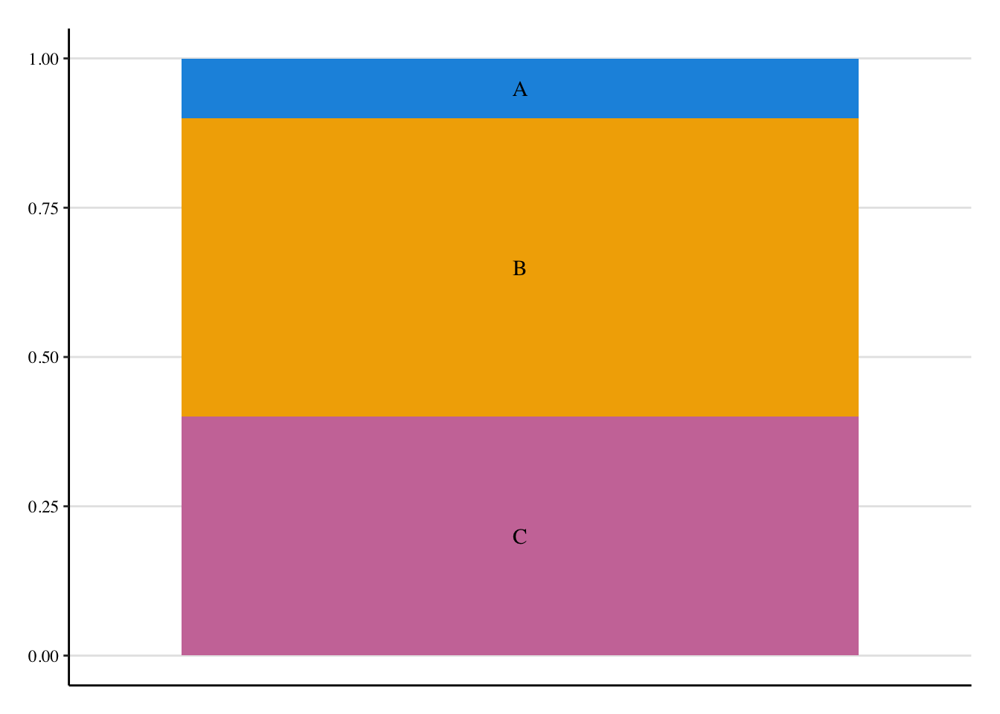
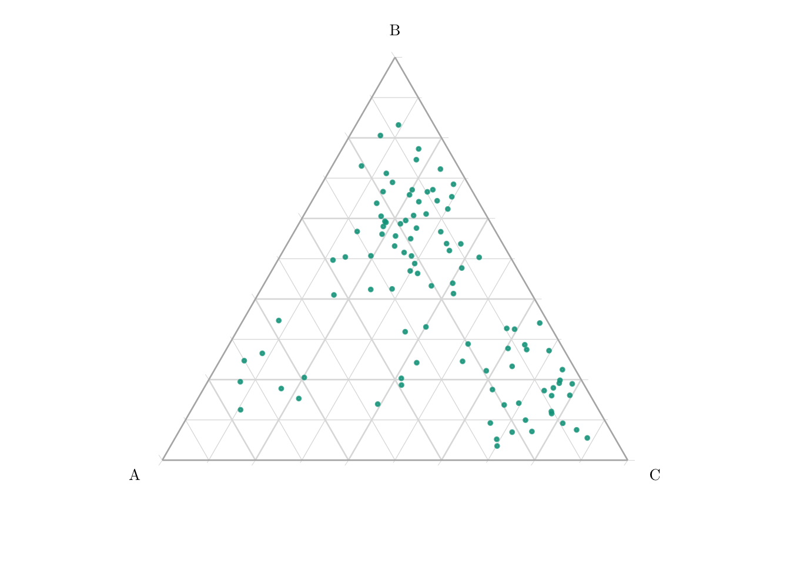
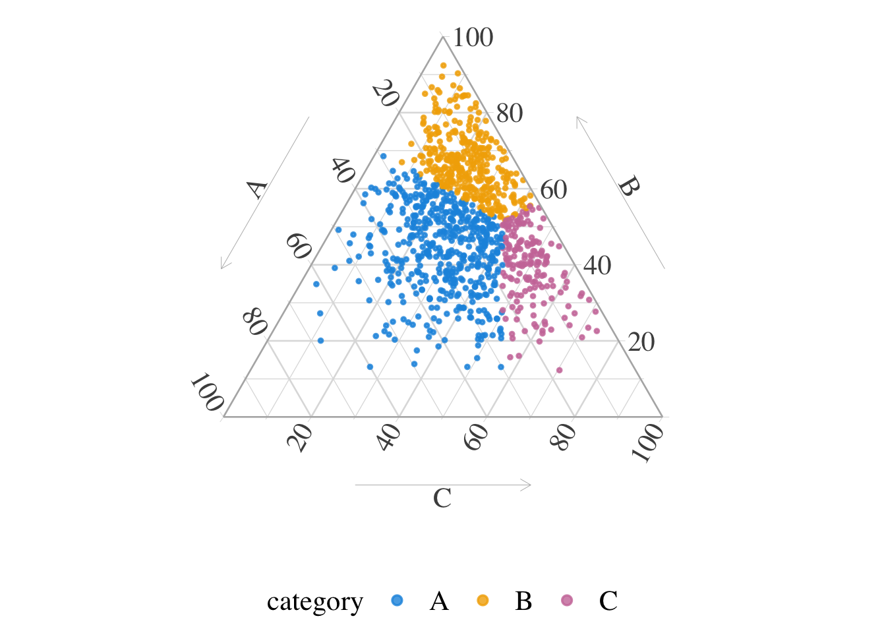
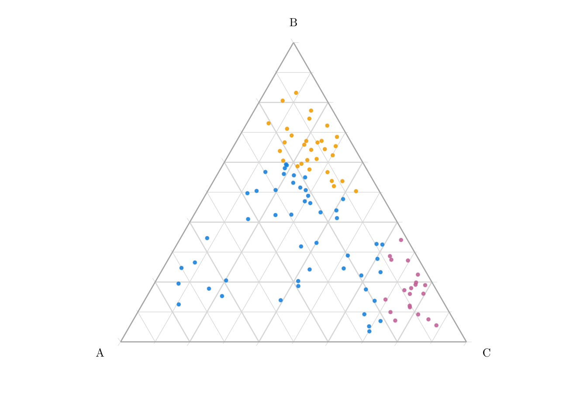

This page shows how optimal transport can be applied to map a categorical variable from one group to another through a three-step procedure:
Representation(from categorical to compositional): Encode each categorical value as a point in the probability simplex (see Section 10.2).
Transport(coupling in the simplex): Use optimal transport to learn a mapping from a group to the other by solving the transport problem over the simplex (see Section 10.3).
Reassignment(from composition to category): Convert the transported probability vector back into a categorical value by assigning it to a vertex of the simplex, using optimal transport theory—specifically transporting mass from a continuous distribution to a discrete one concentrated on the simplex’s corners.
Let us generate a categorical variable \(x\in\{A,B,C\}\), as explained in Chatper 7, with group-specific distributions. Let Group 0 and Group 1 represent two subpopulations in which the distribution of \(x\) differs. Here, we have:
in Group 0 it is \(\boldsymbol{p}_0 = (0.1, 0.5, 0.4)\).
in Group 1, the category distribution is \(\boldsymbol{p}_1 = (0.5, 0.3, 0.2)\).
The objective, as in the previous chapter, is to obtain a counterfactual for each observation from group 0 had they received the treatment \(a=1\), i.e., to obtain \(x(1)\).
The entire procedure is carried out in three steps, as outlined in Algorithm 10.1:
Representation (from categorical to compositional data): Encode the categorical variable as a point in the probability simplex (see Section 10.2).
Transport (coupling on the simplex): Perform optimal transport within the simplex to learn a mapping from group 0 to group 1 (see Section 10.3).
Reassignment (from composition to categorical data): Assign a category to each matched individual by transporting mass from a continuous distribution to a discrete one, using optimal transport theory where the target is concentrated at the simplex’s vertices.
\begin{algorithm} \caption{Conditional transport on causal graph for a categorical feature, from Fernandes Machado et al. (2025).} \begin{algorithmic} \Require observation $x_{0,j}\in\{A_1,\cdots,A_{d_j}\}$ (categorical) \Require $\chi_{0,j}=\{\widehat{p}_j(x_{0,j,1}),\cdots,\widehat{p}_j(x_{0,j,n_0)}\}\in\mathcal{S}_{d_j}^{n_0}$ \Require $\chi_{1,j}=\{\widehat{p}_j(x_{1,j,1}),\cdots,\widehat{p}_j(x_{1,j,n_1)}\}\in\mathcal{S}_{d_j}^{n_1}$ \Require weights $\boldsymbol{w}_0\in\mathbb{R}_+^{n_0}$ and $\boldsymbol{w}_1\in\mathbb{R}_+^{n_1}$ \Require categorical allocation $C_j$ \State $T^\star:\mathcal{S}_{d_j}\to\mathcal{S}_{d_j}$ optimal weighted transport \State $p^\star_{1,j}\gets T^\star(\widehat{p}_j(x_{0,j}))$\\ \Return $x^\star_{1,j}\gets C_j(p^\star_{1,j})\in\{1,\cdots,d_j\}$ \end{algorithmic} \end{algorithm}
10.2 Step 1: From Categorical to Compositional Data
The proportions of each class in group 0 are shown in Figure 10.1.
Codes to generate data and create the Figure.
source("../scripts/utils.R")p_barplot_source <-ggplot(data =tibble(x0 = x0) |>count(x0) |>arrange(desc(x0)) |>mutate(prop = n /sum(n),lab_y =cumsum(prop) - prop/2 )) +geom_bar(stat ="identity", mapping =aes(x =factor(1), y = prop, fill = x0)) +geom_text(mapping =aes(x =factor(1), y = lab_y, label = x0), family = font_family) +scale_fill_manual(values = col_categ, guide ="none") +labs(x =NULL, y =NULL) +theme_paper() +theme(axis.ticks.x =element_blank(), axis.text.x =element_blank(), panel.grid.major.x =element_blank() )p_barplot_source
Figure 10.1: Proportions of observations in group 0.

Suppose that, for each observation, the probability of assignment to each category of the categorical variable \(x \in \{\text{A}, \text{B}, \text{C}\}\) is known. These probabilities can be estimated, for example, using a multinomial logistic regression model.
For illustration purposes, we simulate these probabilities by drawing from a Dirichlet distribution, which ensures that each observation lies on the 3-dimensional simplex \(\mathcal{S}_3\). Thus, for each unit, both the observed category of \(x\) and its associated probability vector are assumed to be known.
These probability vectors can then be represented as points on the simplex \(\mathcal{S}_3\), as shown in Figure 10.2.
Codes to generate the probabilities and create the Figure.
library(MCMCpack)set.seed(12345)alpha_A <-c(9, 3, 2)Z_A <-as.data.frame(rdirichlet(n0 + n1, alpha_A))alpha_B <-c(3, 11, 4)Z_B <-as.data.frame(rdirichlet(n0 + n1, alpha_B))alpha_C <-c(2, 3, 9)Z_C <-as.data.frame(rdirichlet(n0 + n1, alpha_C))# For each observation from group 0 and matched obs from group 1, we have# drawn a category (A, B, or C).# We add drawn propensities, depending on the categoryZ <- Z_Acategory <-c(x0, x1)Z[category =="B", ] <- Z_B[category =="B", ]Z[category =="C", ] <- Z_C[category =="C", ]tb_sample_z <-as_tibble(Z)names(tb_sample_z) <-c("A", "B", "C")tb_sample_z$group <-factor(c(rep(0, n0), rep(1, n1)), levels =c(0, 1))tb_sample_z_1 <- tb_sample_zp_compositional <-ggtern(data = tb_sample_z_1 |>filter(group ==0),mapping =aes(x = A, y = B, z = C)) +geom_point(alpha = .8, size = .5, mapping =aes(color = group)) +scale_colour_manual(name ="group",values = col_group, guide ="none") +theme_light(base_size = font_size, base_family = font_family) +theme_ggtern_minimal()p_compositional
Figure 10.2: Representation of the units in the simplex \(\mathcal{S}_3\), in group 0.

10.3 Step 2: Coupling on the Simplex
In Chapter 9 we assigned arbitrary numerical values to each category and computed pairwise distances between observations based on those values. Here, we instead use the probability vectors associated with each observation (obtained in the previous section) and perform optimal transport in the simplex \(\mathcal{S}_3\).
First, we define a function, compute_pdist_simplex_fast(), to compute the pairwise distance between observations from each group. The distance metric is based on the optimal transport cost between two probability vectors in the unit simplex, as described in Fernandes Machado, Charpentier, and Gallic (2025).
The compute_pdist_simplex_fast() function.
#' Pairwise distance matrix on the simplex#'#' @description#' Computes the pairwise distance matrix of observations in the simplex, using#' the cost function for optimal transport on the unit simplex as the distance#' metric.#'#' @param X Matrix of observations (one observation per row).#' @param Y Matrix of observations (one observation per row).#'#' @returns A matrix of size n x m, where n is the number of observation in X,#' and m is the number of observations in Y, containing the distances between#' observations in X and Y.#' @noRdcompute_pdist_simplex_fast <-function(X, Y) { p <-ncol(X) invX <-1/ X# R[j,i] = sum_k Y[j,k] * invX[i,k] R <- Y %*%t(invX) logXmean <-rowMeans(log(X)) logYmean <-rowMeans(log(Y))# M[i,j] = log(R[j,i]) - log(p) - logYmean[j] + logXmean[i] M_t <-log(R) -log(p) -outer(logYmean, rep(1, length(logXmean))) +outer(rep(1, length(logYmean)), logXmean)t(M_t)}
We then define a function, wass_lp_fast(), to solve the optimal transport problem between two empirical distributions. This function uses the shortsimplex algorithm implemented in the {transport} package and returns both the optimal transport cost (i.e., the Wasserstein distance) and the associated transport plan.
The wass_lp_fast() function.
#' Solving the Optimal Transport Problem#'#' @description#' Finds the optimal transport plan using shortsimplex method.#'#' @param dxy Cost matrix of transport distances between points in X and Y.#' @param wx Weights (marginal distribution) for X.#' @param wy Weights (marginal distribution) for Y.#' @param p Order of the Wassterstein distance. (If p=2: squared Euclidean#' cost).#'#' @importFrom transport transport#'#' @noRdwass_lp_fast <-function(dxy, wx, wy, p =2) {stopifnot(all(abs(sum(wx) -1) <1e-8), all(abs(sum(wy) -1) <1e-8)) m <-length(wx) n <-length(wy)# Convert dxy to a cost matrix (flattened) cost <-as.matrix(dxy)^p# Solve the OT problem (default method = "shortsimplex") plan <- transport::transport(wx, wy, costm = cost)# Convert transport plan (sparse format) to matrix gamma <-matrix(0, m, n)for (i inseq_len(nrow(plan))) { gamma[plan$from[i], plan$to[i]] <- plan$mass[i] }# Compute Wasserstein distance value <-sum(gamma * cost)^(1/ p)list(distance = value, plan = gamma)}
To illustrate the transport methodology, we use the propensity vectors from the first scenario. We begin by splitting the sample according to the group indicator.
Then, we apply our compute_pdist_simplex_fast() function to compute the pairwise distance matrix between observations from the two groups, using their corresponding propensity vectors:
dist_mat <-compute_pdist_simplex_fast(X = prop_0, Y = prop_1)
Using this distance matrix, we solve the optimal transport problem with uniform weights on both marginals:
par_w0 <-rep(1/nrow(prop_0), nrow(prop_0))par_w1 <-rep(1/nrow(prop_1), nrow(prop_1))# Solve the optimal transport problemot_plan <-wass_lp_fast(dxy = dist_mat, wx = par_w0, wy = par_w1, p =2)
To identify the most likely match for each observation in Group 0 under the optimal transport plan, we extract, for each row, the column index with the highest transported mass. This creates a table of one-to-one matches based on the maximal transport mass for each observation in group 0.
So far, for each unit from group 0, we have a matched individual in group 1. We have, since the first step, a compositional representation for each unit (\(\widehat{\boldsymbol{p}}\)). The third and final step involves mapping the transported compositional representation back to a categorical variable. As detailed in Algorithm 10.2 (from Fernandes Machado, Charpentier, and Gallic (2025)), this is done via classical optimal transport on the simplex.
Objectives
Here, want to know how to divide the simplex \(\mathcal{S}_3\) into three regions (\(R_A, R_B, R_C\)) so that each region contains a prescribed amount of probability mass (\(p_A, p_B, p_C\)) from a continuous distribution (here, Dirichlet).
We use optimal transport theory (particularly Brenier’s theory) for transporting mass from a continuous distribution to a discrete one (point masses at the triangle’s corners).
The method is performed in two steps:
Definition of a transport cost: we use squared distance between points.
Find a map \(T\) that moves each point \(\boldsymbol{x}\) in the simplex to a vertex \(\boldsymbol{u}_i\) (e.g., \((1,0,0)\)) while minimizing total transport cost.
The map \(T\) is defined via Laguerre cells (power diagrams), which are convex regions where each point is closer (in a weighted sense) to one vertex than to the others.
The obtained regions together form a weighted Voronoi diagram on the simplex. Each region has exactly the desired share of the total probability mass: \(\int_{R_i} f(\boldsymbol{x}) dx = p_i\).
\begin{algorithm} \caption{From compositional to categorical feature, with marginal constraints.} \begin{algorithmic} \Require $n$ observations on $\mathcal{S}_d$, $\widehat{\boldsymbol{p}}_1,\cdots,\widehat{\boldsymbol{p}}_n$ \Require target proportions $\pi_1,\cdots,\pi_d$ \State Optimal mapping $T^\star:\mathcal{S}_d\to\{1,\cdots,d\}$\\ (from $\widehat{\boldsymbol{p}}\in\mathcal{S}_d$ to vertices of $\mathcal{S}_d$, with masses $\pi$)\\ \Return $T^\star:\mathcal{S}_d\to\{1,\cdots,d\}$ (Voronoi tessellation) \end{algorithmic} \end{algorithm}
Before we apply this algorithm to our categorical variable, we want to explain in further details how it works. If you want to skip this part, go directly to Section 10.4.2 to continue with the current data.
10.4.1 Barycentric Centroid of Balance
Let us play with the distributions of the propensities (\(p_0\) and \(p_1\)) to illustrate how Algorithm 10.2 works. We draw random samples from a Dirichlet distribution. Let us start with a concentration parameter \(\alpha=(2, 5, 3)\). Each sample lies in the 3-dimensional simplex \(\mathcal{S}_3\), and the resulting distribution has density \(f\) with respect to Lebesgue measure on \(\mathcal{S}_3\).
We want to find a partition \(R_A,R_B,R_C\) of \(\mathcal{S}_3\) such that \[
\int_{R_i}f(\boldsymbol{x})\mathrm{d}\boldsymbol{x}=p_i,~i\in\{A,B,C\}.
\] We can use (classical) optimal transport theory to find partitions of the simplex that map probability mass from the Dirichlet to the discrete distribution \(\boldsymbol{p}=(p_A,p_B,p_C)\), in each vertex of the simplex, \[
\int_{T^{-1}(\boldsymbol{u}_i)}f(\boldsymbol{x})\mathrm{d}\boldsymbol{x}=p_i,~i\in\{A,B,C\},
\] where \(\{\boldsymbol{u}_A,\boldsymbol{u}_B,\boldsymbol{u}_C\}\) are unit vectors, vertices of the \(\mathcal{S}_3\) (i.e., \((1,0,0)\), \((0,1,0)\) and \((0,0,1)\)).
Note
Since the initial measures are absolutely continuous with respect to Lebesgue measure, and since both have finite second moment, there exists a unique optimal transport map \(T\) (and this map is the gradient of a convex function).
Let us consider for now that \(\boldsymbol{p}=(1/2,1/3,1/6))\).
# Unit vectors of S_3vertices <-matrix(c(1, 0, 0, # A0, 1, 0, # B0, 0, 1# C), byrow =TRUE, ncol =3)# source weightsmass_source <-rep(1/ n, n)# target weightsmass_target <-c(3, 2, 1) /6# Cost matrix (squared Euclidean distance)cost_matrix <-as.matrix(dist(rbind(samples, vertices))^2)cost_matrix <- cost_matrix[1:n, (n +1):(n +3)]# We assign eah observation to one vertex# by minimizing the global transport cost, while matching marginals# Solve the optimal transport planot_plan <- transport::transport(a = mass_source, b = mass_target, costm = cost_matrix, method ="shortsimplex")# Assign each sample to a category based on OT planassignment <-rep(NA, n)# mass each source sends to each targetmass_matrix <-matrix(0, nrow = n, ncol =3)for (j in1:nrow(ot_plan)) { from <- ot_plan$from[j] to <- ot_plan$to[j] mass <- ot_plan$mass[j] mass_matrix[from, to] <- mass_matrix[from, to] + mass}# Assign each source point to the target it contributes the most mass toassignment <-max.col(mass_matrix, ties.method ="first")colnames(samples) <-c("A", "B", "C")samples_dirichlet_p <-as_tibble(samples) |>mutate(category =colnames(samples)[assignment])samples_dirichlet_p
# A tibble: 1,000 × 4
A B C category
<dbl> <dbl> <dbl> <chr>
1 0.101 0.837 0.0615 B
2 0.120 0.642 0.238 B
3 0.0520 0.235 0.713 C
4 0.196 0.537 0.267 A
5 0.0715 0.611 0.317 B
6 0.200 0.497 0.303 A
7 0.0943 0.804 0.101 B
8 0.0851 0.498 0.417 C
9 0.124 0.452 0.424 C
10 0.232 0.542 0.226 A
# ℹ 990 more rows
Each region \(R_i\) corresponds to the set of points \(\boldsymbol{x}\in\mathcal{S}_3\) such that \(\boldsymbol{u}_i\) minimizes \(\|\boldsymbol{x}-\boldsymbol{u}_i\|^2-\phi_i\) where \(\phi_i\in\mathbb{R}\) is a potential offset (weight, determined via dual optimization). This structure defines a power diagram, also known as a Laguerre–Voronoi diagram (or additively weighted Voronoi diagram). These subsets form a weighted Voronoi tessellation (in barycentric space), as shown in Figure 10.5.
Figure 10.5: Barycentric centroid of balance, when \(\mathcal{D}(\boldsymbol{\alpha})\) with \(\boldsymbol{\alpha}=(2, 5, 3)\) and when \(\boldsymbol{p}=(3 ,2,1)/6\).

We can, in addition, identify the intersection, i.e., the point where the minimum of the class-wise kernel density estimates is maximized. We do it by considering a grid over which we estimate the density. We create a function, generate_simplex_grid(), to generate a grid on \(\mathcal{S}_3\).
Warning
This step was originally introduced to improve visualization and is not actually used in the algorithm itself. In addition, there appears to be a minor issue: the resulting points do not lie exactly at the expected intersections, although they remain close. This discrepancy suggests a potential numerical or approximation artifact, but it does not affect the main transport procedure.
Figure 10.6: Barycentric centroid of balance, when \(\mathcal{D}(\boldsymbol{\alpha})\) with \(\boldsymbol{\alpha}=(2, 5, 3)\) and when \(\boldsymbol{p}=(3,2,1)/6\). Black dot: intersection (point where the minimum of the class-wise kernel density estimates is maximized).
10.4.1.1 Varying \(\alpha\) and \(\boldsymbol{p}\).
Let us now make \(\alpha\) and \(\boldsymbol{p}\) vary. We will consider \(\boldsymbol{\alpha} = (1,1,1)\) (uniform distribution), and \(\boldsymbol{\alpha} = (2, 5, 3)\); and \(\boldsymbol{p} = (1/3,1/3,1/3)\), and \(\boldsymbol{p} = (1/2,1/3,1/6)\).
For convenience, let us wrap the previous code in a function, get_data_assignment().
Code for the get_data_assignment function
#' @param n Number of observations to sample from the Dirichlet Distribution.#' @param Vector of shape parameters, or matrix of shape parameters #' corresponding to the number of draw. Default to \eqn{(1,1,1)}.#' @param p Vector of target probabilities. Default to \eqn{(1/3, 1/3, 1/3)}.#' get_data_assignment <-function(n,alpha =c(1, 1, 1),p =c(1, 1, 1) /3,intersection_point =TRUE) {# Draw n samples samples <-rdirichlet(n, alpha = alpha)# Unit vectors of S_3 vertices <-matrix(c(1, 0, 0, # A0, 1, 0, # B0, 0, 1# C ), byrow =TRUE, ncol =3)# source weights mass_source <-rep(1/ n, n)# target weights mass_target <- p# Cost matrix (squared Euclidean distance) cost_matrix <-as.matrix(dist(rbind(samples, vertices))^2) cost_matrix <- cost_matrix[1:n, (n +1):(n +3)]# We assign eah observation to one vertex# by minimizing the global transport cost, while matching marginals# Solve the optimal transport plan ot_plan <- transport::transport(a = mass_source, b = mass_target, costm = cost_matrix, method ="shortsimplex" )# Assign each sample to a category based on OT plan assignment <-rep(NA, n)# mass each source sends to each target mass_matrix <-matrix(0, nrow = n, ncol =3)for (j in1:nrow(ot_plan)) { from <- ot_plan$from[j] to <- ot_plan$to[j] mass <- ot_plan$mass[j] mass_matrix[from, to] <- mass_matrix[from, to] + mass }# Assign each source point to the target it contributes the most mass to assignment <-max.col(mass_matrix, ties.method ="first")colnames(samples) <-c("A", "B", "C") samples <-as_tibble(samples) |>mutate(category =colnames(samples)[assignment])## Intersection point#if (intersection_point ==TRUE) {# Create a triangular grid over (A,B,C) constrained to S_3 grid_points <-generate_simplex_grid(resolution =100)# Evaluation of KDE for data from the source distribution dens_A <-get_category_density_2D(samples = samples, grid_points = grid_points, category_label ="A" ) dens_B <-get_category_density_2D(samples = samples, grid_points = grid_points, category_label ="B" ) dens_C <-get_category_density_2D(samples = samples, grid_points = grid_points, category_label ="C" )# Find point where min(densities) is maximal min_dens <-pmin(dens_A, dens_B, dens_C) max_idx <-which.max(min_dens) intersection_point <- grid_points[max_idx, ] tb_intersection <-as_tibble(intersection_point) } else { tb_intersection <-NULL }list(samples = samples,tb_intersection = tb_intersection )}
Using get_data_assignment(), we draw samples according to \(\boldsymbol{\alpha}\) and then we find partitions of the simplex that map probability mass from the Dirichlet to the discrete distribution \(\boldsymbol{p}\), in each vertex of the simplex.
samples_unif_unif <-get_data_assignment(n = n, alpha =c(1, 1, 1), p =c(1, 1, 1) /3)samples_unif_p <-get_data_assignment(n = n, alpha =c(1, 1, 1), p =c(3, 2, 1) /6)samples_dirichlet_unif <-get_data_assignment(n = n, alpha =c(2, 5, 3), p =c(1, 1, 1) /3)samples_dirichlet_p <-get_data_assignment(n = n, alpha =c(2, 5, 3), p =c(3, 2, 1) /6)
The results can be visualized in simplex-baryc-centr-bal-example-full, when \(\mathcal{D}(\boldsymbol{\alpha})\) with \(\boldsymbol{\alpha}=(1, 1, 1)\) (left) and \(\boldsymbol{\alpha}=(2, 5, 3)\) (right), when \(\boldsymbol{p}=(1,1,1)/3\) (top) and \(\boldsymbol{p}=(3,2,1)/6\) (bottom).
Figure 10.7: Barycentric centroid of balance, when \(\mathcal{D}(\boldsymbol{\alpha})\) with \(\boldsymbol{\alpha}=(1, 1, 1)\) (left) and \(\boldsymbol{\alpha}=(2, 5, 3)\) (right), when \(\boldsymbol{p}=(1,1,1)/3\) (top) and \(\boldsymbol{p}=(3,2,1)/6\) (bottom). Black dot: intersection (point where the minimum of the class-wise kernel density estimates is maximized).
We define a function, get_assignment(), to map probability vectors from the simplex to categorical labels by solving an optimal transport problem. The transport is computed under marginal constraints, and each individual is assigned to the category to which it contributes the most mass in the optimal transport plan.
The get_assignment() function.
#' OT for categorical variable, from source distribution to target #' probabilities.#' #' @param probs Propensities from the source distribution (individuals in rows,#' classes in columns).#' @param labels Levels (labels) of the classes.#' @param p Vector of target probabilities. If omitted, uniform weights are #' used.#' get_assignment <-function(probs, labels,p =NULL) { n_labels <-ncol(probs) n <-nrow(probs)if (is.null(p)) p <-rep(1, n_labels) / n_labels # Uniform weights# Unit vectors vertices <-diag(n_labels)# colnames(vertices) <- colnames()# source weights mass_source <-rep(1/ n, n)# target weights mass_target <-as.numeric(p)# Cost matrix (squared Euclidean distance) cost_matrix <-as.matrix(dist(rbind(probs, vertices))^2) cost_matrix <- cost_matrix[1:n, (n +1):(n + n_labels)]# Assign each observation to one vertex# by minimizing the global transport cost, while matching marginals# Solve the optimal transport plan ot_plan <- transport::transport(a = mass_source, b = mass_target, costm = cost_matrix, method ="shortsimplex" )# Assign each sample to a category based on OT plan assignment <-rep(NA, n)# mass each source sends to each target mass_matrix <-matrix(0, nrow = n, ncol = n_labels)for (j in1:nrow(ot_plan)) { from <- ot_plan$from[j] to <- ot_plan$to[j] mass <- ot_plan$mass[j] mass_matrix[from, to] <- mass_matrix[from, to] + mass }# Assign each source point to the target it contributes the most mass to assignments <-max.col(mass_matrix, ties.method ="random")#factor(c(1, 2, 4), levels = 1:4, labels = c("A", "B", "C", "D"))factor(assignments, levels =1:length(labels), labels = labels)}
We apply our get_assignment() function to get the transported categories for the individuals from group 0.
Figure 10.9: Transported categories of observation from group 0 had they been in group 1 (right).

We can display on a barplot (Figure 10.10) the proportion of each category for the transported values, and compare them to the targetted distribution in that group: \(p_1 = (0.5, 0.3, 0.2)\).
Codes to generate data and create the Figure.
p_barplot_target_1 <-ggplot(data =tibble(x_t = transported) |>count(x_t) |>arrange(desc(x_t)) |>mutate(prop = n /sum(n),lab_y =cumsum(prop) - prop/2 )) +geom_bar(stat ="identity", mapping =aes(x =factor(1), y = prop, fill = x_t)) +geom_text(mapping =aes(x =factor(1), y = lab_y, label = x_t), family = font_family) +scale_fill_manual(values = col_categ, guide ="none") +labs(x =NULL, y =NULL) +theme_paper() +theme(axis.ticks.x =element_blank(), axis.text.x =element_blank(), panel.grid.major.x =element_blank() )p_barplot_target_1
Figure 10.10: Share of each category for the transported units.
Fernandes Machado, Agathe, Arthur Charpentier, and Ewen Gallic. 2025. “Optimal Transport on Categorical Data for Counterfactuals Using Compositional Data and Dirichlet Transport.”https://arxiv.org/abs/2501.15549.